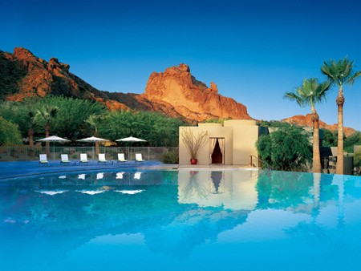

Paradise Valley Real Estate: Arizona's Premier Luxury Address
Welcome to Paradise Valley
Arizona's premier estate-lot address, framed by Camelback and Mummy MountainWhat to Love
- One- to five-acre lots with true privacy
- World-class resorts: The Phoenician, Sanctuary, Montelucia
- Minutes from Old Town Scottsdale and Sky Harbor Airport
- Iconic mountain views in nearly every direction
What is Paradise Valley known for?
Paradise Valley is Arizona's premier luxury address, covering just under 16 square miles with fewer than 13,000 residents. The town has intentionally preserved a low-density, estate-style environment: there are no apartment complexes, very few commercial centers, and zoning that requires large residential lots.
What do homes in Paradise Valley look like?
Rather than gated subdivisions, Paradise Valley is defined by one- to five-acre estate lots with custom-designed homes, long private driveways, mature desert landscaping, and citrus groves. Architecture ranges from classic Mediterranean estates to cutting-edge contemporary homes, and it is common for neighboring properties to vary widely in scale and design.
The town has very few gated communities compared with other luxury markets; privacy in Paradise Valley comes primarily from large lot sizes, zoning, and setback requirements rather than perimeter walls and guard gates.
What is the setting like in Paradise Valley?
Paradise Valley has no high-rise buildings, minimal commercial development, wide roads, and little through traffic, which keeps the town quiet despite its central location. Homes are minutes from Scottsdale Fashion Square, Old Town Scottsdale, the Biltmore area, and Phoenix Sky Harbor International Airport.
What landmarks and resorts define Paradise Valley?
Paradise Valley is framed by Camelback Mountain, Mummy Mountain, and the Phoenix Mountain Preserve, and many homes enjoy unobstructed mountain views. The town is also home to several of Arizona's most recognized resorts: The Phoenician, Sanctuary Camelback Mountain Resort & Spa, Mountain Shadows Resort Scottsdale, Omni Scottsdale Resort & Spa at Montelucia, and the JW Marriott Scottsdale Camelback Inn Resort & Spa.
Local landmarks include El Chorro, a historic dining destination known for its sticky buns and mountain views, and Cosanti Originals, Paolo Soleri's architecture studio, bronze foundry, and art destination. The Barry Goldwater Memorial and numerous Camelback Mountain trailheads are also within the town.
What are the notable neighborhoods within Paradise Valley?
| Neighborhood | Characteristics |
|---|---|
| Camelback Country Club Area | Golf course estates, mature landscaping, many remodeled homes |
| Mummy Mountain | Elevated homesites, panoramic views, gated estates |
| Cheney Estates / Finisterre | Guard-gated entries, custom estates, exceptional privacy |
| Tatum & Lincoln Area | Smaller luxury homes, still within Paradise Valley |
Because Paradise Valley isn't divided into master-planned communities, buyers and agents often describe homes by their surrounding landmark — Mummy Mountain, Camelback Mountain, or a specific guard-gated subdivision — rather than a formal neighborhood name.
What schools serve Paradise Valley?
Paradise Valley is served by Scottsdale Unified School District and Paradise Valley Unified School District, along with nearby private schools including Phoenix Country Day School, Brophy College Preparatory, and Xavier College Preparatory. [VERIFY current school boundaries for a specific address]
What should buyers know before purchasing in Paradise Valley?
Paradise Valley's strict zoning preserves large lot sizes and open space, which is central to the town's character but also limits the pace of new development — buyers should expect fewer new-construction options relative to other luxury Valley markets and should budget time for custom design and permitting if building new.
Because so few communities are gated, privacy is typically achieved through lot size, landscaping, and setbacks rather than a guardhouse, which is a different privacy model than buyers may be used to in other luxury markets.


Common Questions
Is Paradise Valley a gated community?
No. Paradise Valley is a separate incorporated town, not a single gated community, and most of its neighborhoods are not gated. Privacy comes primarily from large lot sizes, strict zoning, and setback requirements rather than perimeter gates, though some specific subdivisions such as Cheney Estates and Finisterre are guard-gated.
How big are typical lots in Paradise Valley?
Most Paradise Valley homes sit on one- to five-acre lots, which is significantly larger than typical lots in neighboring Scottsdale and Phoenix communities.
What mountains surround Paradise Valley?
Paradise Valley is framed by Camelback Mountain, Mummy Mountain, and the Phoenix Mountain Preserve, and many homes throughout the town have unobstructed mountain views.
How far is Paradise Valley from Scottsdale Fashion Square and the airport?
Paradise Valley is minutes from Scottsdale Fashion Square, Old Town Scottsdale, the Biltmore area, and Phoenix Sky Harbor International Airport, despite its quiet, low-density residential character.
What resorts are located in Paradise Valley?
Paradise Valley is home to The Phoenician, Sanctuary Camelback Mountain Resort & Spa, Mountain Shadows Resort Scottsdale, Omni Scottsdale Resort & Spa at Montelucia, and the JW Marriott Scottsdale Camelback Inn Resort & Spa.


Considering a Move to Paradise Valley?
Call 480-734-0870 or email laura@laurajorden.com for current listings and market data.
Contact Laura